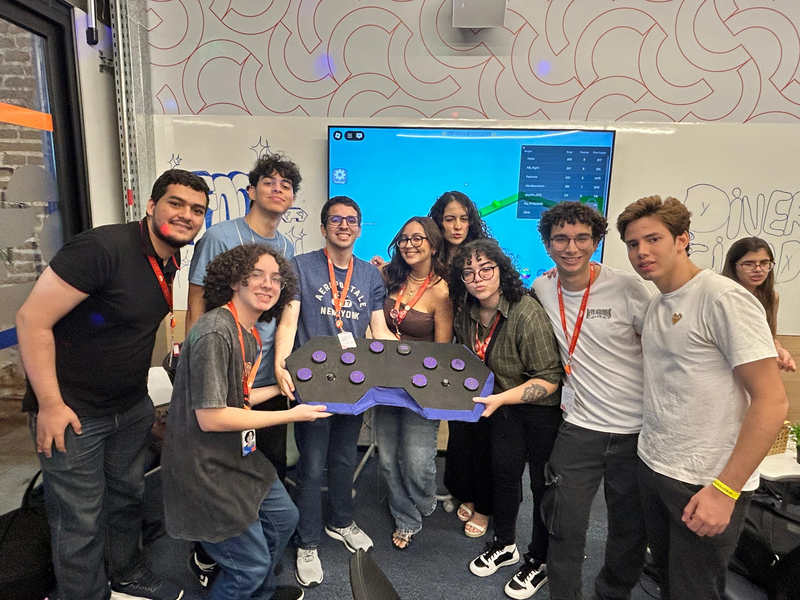
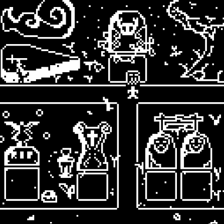

FootLink
O FootLink é um controle adaptativo de baixo custo feito para pessoas
com deficiência na parte superior do corpo.
Utilizamos um arduino Leonardo, 10 botões e 2 joysticks. Para que
todas as utilidades de um controle padrão fossem alcançadas, ao
pressionar o joystick direito, a funcionalidade dos botões do lado
esquerdo mudam. Os botões que antes serviam como gatilhos passam
a servir como um D-pad.
WOD Tracker
Este projeto é um sistema que visa permitir que o usuário registre e acompanhe
sua evolução nos treinos de Crossfit.
Todas as informações dos treinos inseridas pelo usuário são salvas em
arquivos TXT, servindo como banco de dados local.
One Last Wish
Um jogo feito no Bitsy para a cadeira de Introdução a Computação.
Projeto feito para explorar as possibilidades e as limitações do processo
de criação de um jogo utilizando a abordagem No-Code.
No jogo, você é um exorcista que trabalha para a igreja e o seu trabalho é procurar por espiritos que ainda estão vagando no nosso mundo e ajudá-los a completarem seus assuntos pendentes. Você pode jogar clicando aqui: